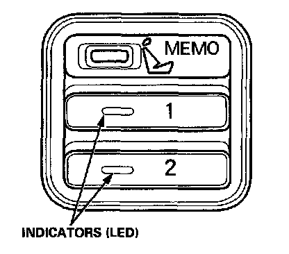
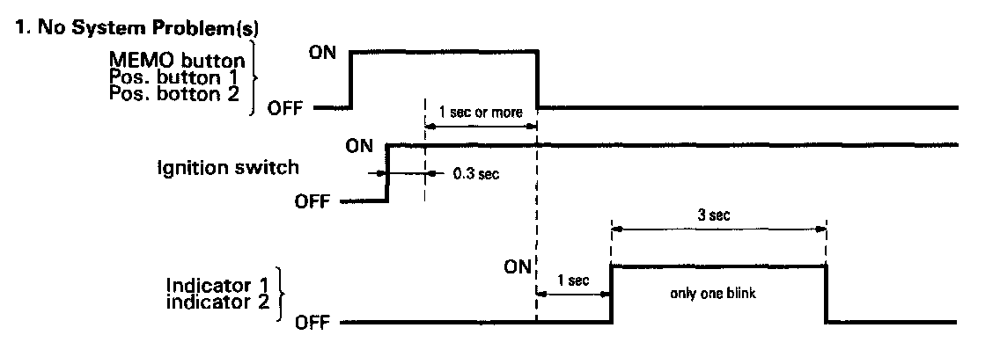
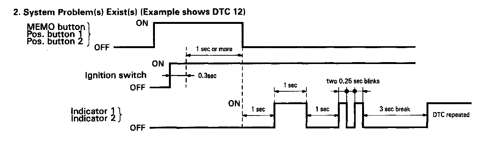

Initial Inspection and Diagnostic Overview
SELF-DIAGNOSTIC PROCEDURESThe self-diagnostic function of the driving position memory system detects system problems, and stores up to five problem causes in memory. This information can be retrieved by displaying the diagnostic trouble code.
Displaying the Diagnostic Trouble Code (DTC)

1. Turn the ignition switch OFF.
2. Press the MEMO button and both position buttons at the same time, and hold them down.
3. Turn the ignition switch ON, wait at least one second, and then release the three buttons.
4. The position button indicators will blink to show the DTC.
DTC Indications


Up to five DTCs can be indicated in the order the problems occurred. The first digit is indicated by the number of one second blinks, the second digit is indicated by the number of 0.25 second blinks. There is a three second break between each DTC of multiple DTCs.
Cancelling the DTC Indication
- Turn the ignition switch OFF or
- Press the MEMO button or
- Press position button 1 or
- Press position button 2 or
- Press one of the driving position adjustment switches.
Erasing the DTC from Memory
Disconnect the battery negative cable or remove the No.20 (7.5 A) fuse from the under-dash fuse/relay box for at least 30 seconds.